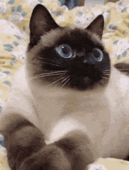

Ilustraciones
Mis ilustraciones son un reflejo de mi pasión por la creatividad y el diseño. Con un estilo que fusiona lo tradicional y lo digital, me esfuerzo por dar vida a cada trazo con detalle y expresividad. A través de colores vibrantes y formas cuidadas, busco transmitir emociones y contar historias que conecten visualmente con las personas. Cada proyecto es una oportunidad para experimentar con nuevas técnicas y explorar diferentes temáticas, creando imágenes que no solo capturan la atención, sino que también invitan a sumergirse en un universo lleno de significado.

Paisaje
Las fotografías de paisajismo buscan encapsular la grandeza y belleza natural de los entornos, desde montañas imponentes hasta campos abiertos. El objetivo principal de este tipo de fotografía es transmitir una sensación de inmensidad y serenidad, invitando al espectador a sumergirse en la escena como si estuviera ahí. Los fotógrafos de paisajismo juegan con la luz natural, las sombras y la composición para resaltar detalles que normalmente podrían pasar desapercibidos. Este estilo de fotografía se basa en la observación paciente, ya que los paisajes están en constante cambio, ofreciendo infinitas posibilidades para capturar la belleza del mundo.

Las fotografías de atardeceres destacan por su capacidad de capturar momentos efímeros y llenos de color. La "hora dorada", ese breve lapso justo antes de que el sol se esconda en el horizonte, tiñe el cielo de tonos cálidos como el naranja, el rosa y el púrpura. Este tipo de fotografía no solo se centra en la belleza del cielo, sino también en cómo la luz suave transforma el paisaje y los objetos que lo rodean. Los atardeceres tienen una cualidad emotiva, evocando sentimientos de calma, nostalgia o incluso renovación. Capturarlos implica tener una visión clara de cómo la luz interactúa con el entorno, dando lugar a imágenes que parecen sacadas de un sueño.
Fotografiar paisajes no es solo cuestión de apuntar la cámara y disparar. La composición juega un papel crucial en crear una imagen visualmente equilibrada y atractiva. Elementos como la regla de los tercios, la simetría, las líneas convergentes y la profundidad de campo son herramientas fundamentales para el fotógrafo de paisajes. Además, el uso de lentes angulares permite capturar amplias porciones del entorno, mientras que las largas exposiciones pueden agregar un toque etéreo a elementos como el agua o las nubes. En paisajismo, la paciencia es clave; a menudo, esperar el momento adecuado, como el cambio en la luz o en las condiciones climáticas, puede hacer la diferencia entre una fotografía ordinaria y una extraordinaria.
 Más allá de la técnica, los atardeceres tienen un significado simbólico profundo en la fotografía. Son vistos como el cierre de un ciclo, el fin de un día, y como tal, pueden simbolizar una variedad de emociones, desde la reflexión hasta la esperanza de un nuevo comienzo. El fotógrafo que capta un atardecer busca no solo retratar el colorido cielo, sino también la emoción que ese momento genera en el espectador. Al igual que los paisajes, los atardeceres permiten una interpretación personal de la naturaleza, donde el tiempo parece detenerse por un instante para ofrecer una visión única y fugaz.
Más allá de la técnica, los atardeceres tienen un significado simbólico profundo en la fotografía. Son vistos como el cierre de un ciclo, el fin de un día, y como tal, pueden simbolizar una variedad de emociones, desde la reflexión hasta la esperanza de un nuevo comienzo. El fotógrafo que capta un atardecer busca no solo retratar el colorido cielo, sino también la emoción que ese momento genera en el espectador. Al igual que los paisajes, los atardeceres permiten una interpretación personal de la naturaleza, donde el tiempo parece detenerse por un instante para ofrecer una visión única y fugaz.
Gatos
Me gustan los gatos, demasiado, supongo que tambien se merecen su propio apartado, aqui van mis tipos de gato favorito junto con un gif divertido :)
Siames
Popular desde el siglo XIX, esta raza de gato se originó en Tailandia (anteriormente conocida como Siam). El siamés ha sido una raza fundamental para el pelo corto oriental, el esfinge y el Himalaya. La mayoría de los gatos siameses tienen marcas distintas llamadas "puntos" que son las áreas de coloración en la cara, las orejas, las patas y la cola. Dos variedades de gatos siameses tienen una cabeza en forma de "manzana" y un cuerpo más regordete y la otra tiene una cabeza más grande y un cuerpo delgado.
Persa
También conocido cariñosamente como uno de los gatos de "cara aplastada", el gato iraní o el gato Shiraz (llamado así por una ciudad en Irán), los persas tienen hermosos abrigos de piel largos. Pueden venir en casi cualquier color y tener una cara plana en comparación con la mayoría de las otras razas de gatos. Los persas aparecen en muchas películas, obras de arte y comerciales y han sido una de las razas de gatos más populares durante décadas
Bengal
Los bengalíes son gatos de aspecto salvaje, literalmente. Sus marcas los hacen parecer más como si pertenecieran a la jungla que a tu hogar, pero están domesticados.
Shorthair Americano
Una raza totalmente estadounidense, el gato americano de pelo corto es un felino inteligente de pelo corto que tiene una cara redonda y orejas cortas. A menudo se los confunde con gatos domésticos mestizos, pero son de raza pura. Su nombre de raza cambió de gatos domésticos a Shorthair en 1966 para diferenciarlos. Este gato de tamaño mediano tiene una naturaleza gentil que hace de esta raza un gran compañero para familias con niños u otras mascotas. El American Shorthair es una de las razas de gatos con pedigrí más populares en América del Norte.
American wirehair
Como su propio nombre indica, lo más característico de esta raza es su pelaje. El gato american wirehair o americano de pelo duro es grande y tiene un pelaje duro, elástico y áspero; cada pelo, de tamaño corto o mediano, es fino y encrespado o rizado. Los bigotes suelen ser rizados. El alcance completo del «rizado» no se manifiesta hasta que el gato es adulto. Puede que haya gatitos con un pelaje muy rizado que luego cambien a un pelo ondulado al crecer, y viceversa. Pueden presentar todo tipo de colores, dibujos y manchas.
">
Gatos famosos
También me tome el tiempo de poner mis gatos famosos favoritos de peliculas y series
Garfield
Creado por Jim Davis en 1978, Garfield es conocido por su amor por la comida, su pereza y su sarcasmo. Sus cómics y caricaturas han entretenido a generaciones de fans de todas las edades. Garfield y sus amigos y El show de Garfield han sido sus programas de televisión entre 1988 y 2016. El pasado 2 de mayo se estrenó la tercera película: Garfield: fuera de casa.
Tom
Tom es el gato en perpetua persecución del ratón Jerry en la famosa serie de dibujos animados creada por William Hanna y Joseph Barbera en 1940. Aunque sus intentos de atrapar a Jerry son siempre infructuosos, sus travesuras han dejado una marca indeleble en la historia de la animación.
Silvestre
Silvestre es un gato negro y blanco que pasa la mayor parte de su tiempo tratando de atrapar al canario Tweety en la serie de dibujos animados creada por Friz Freleng en 1945. A pesar de sus numerosos intentos fallidos, Silvestre sigue siendo uno de los personajes más queridos de Warner Bros. Una de sus últimas apariciones ha sido en la película Space Jam: Una nueva era en 2021 junto con el resto de los icónicos personajes de la productora.
Gato con botas
Si bien la historia del Gato con botas proviene de la literatura, es un cuento popular francés del 1600, su aparición más icónica fue en la saga de Shrek 2, en la que siempre tuvo un lugar, además de las tres películas que lo tienen como protagonista con la voz de Antonio Banderas. Su astucia, ingenio y habilidad para resolver problemas han cautivado a audiencias de todas las edades.
Don Gato
Conocido en español como Don Gato, en inglés es Top Cat, es el líder de una pandilla de gatos callejeros que viven en la ciudad de Nueva York. Con su ingenio y su astucia, Top Cat siempre encuentra una manera de salir adelante, convirtiéndose en un héroe improbable para muchos. A pesar de que tan solo cuenta con treinta episodios, la serie de televisión estrenada en 1961 es un clásico de los gatos.
Garfi
Garfi era mi gato, el nacio un 20 de Abril del 2020, desafortunadamente el ya no esta conmigo desde marzo de este año, pero siempre vive en mis trabajos, no se donde este ahora, pero quiero que sepa que lo recuerdo mucho y lo extraño, un beso en tu frente donde quiera que estes solecito <3